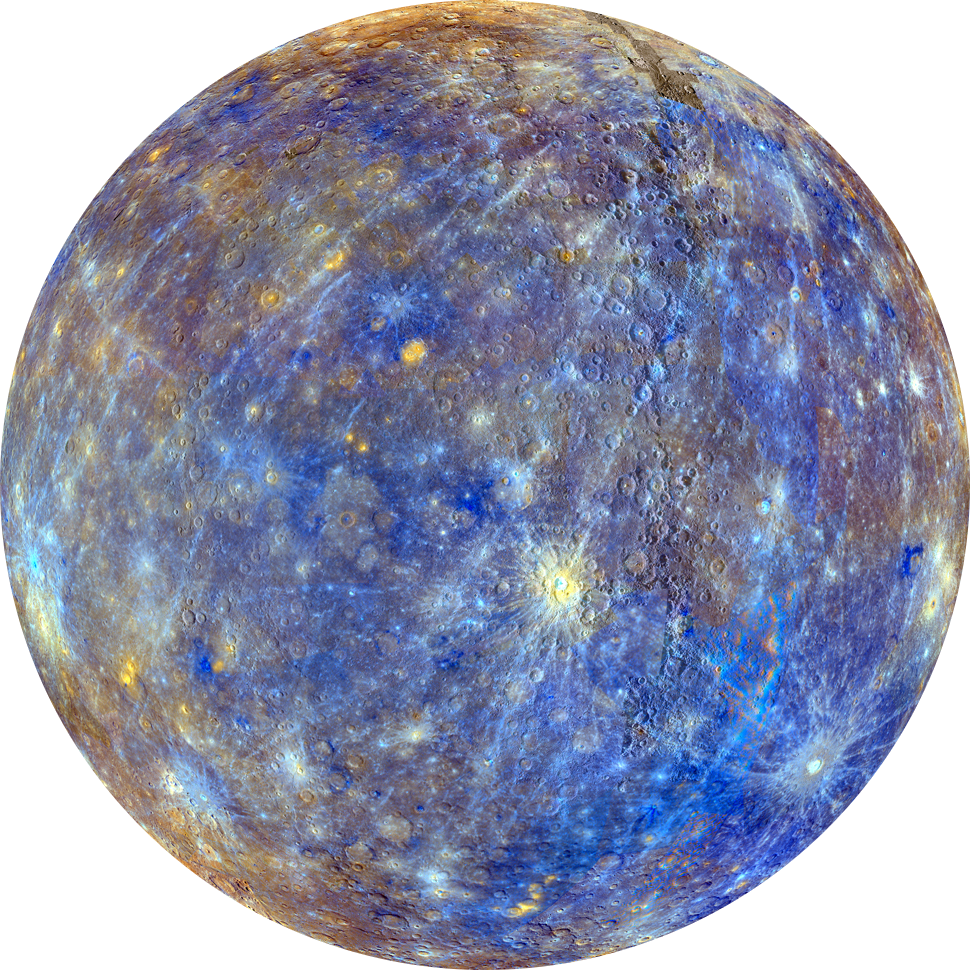
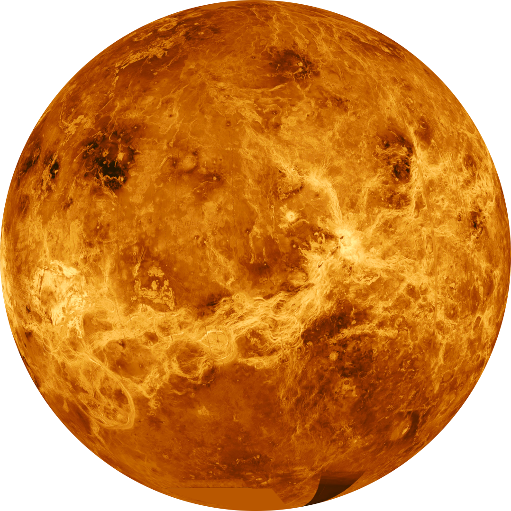
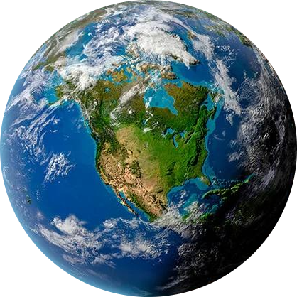
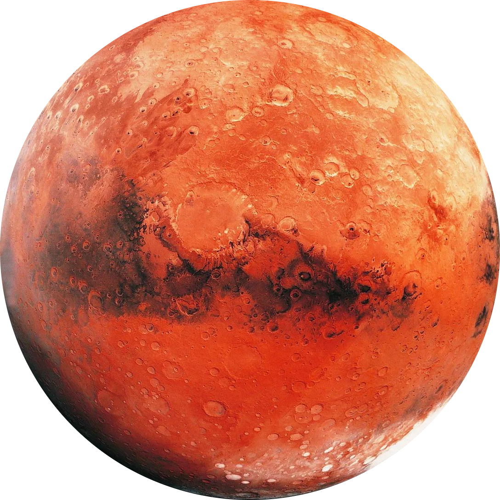
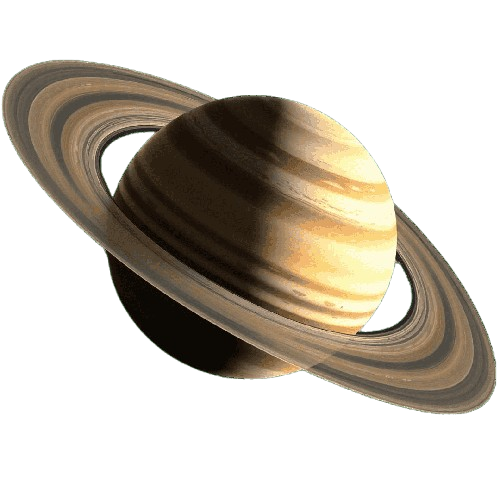
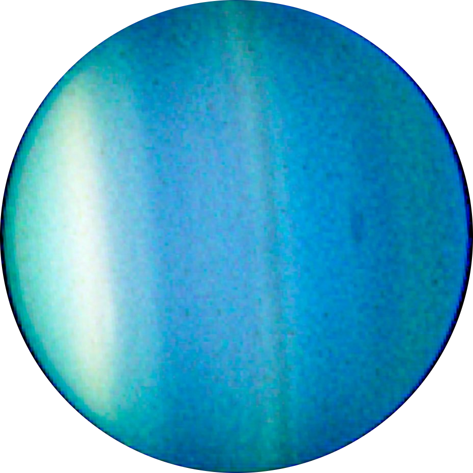
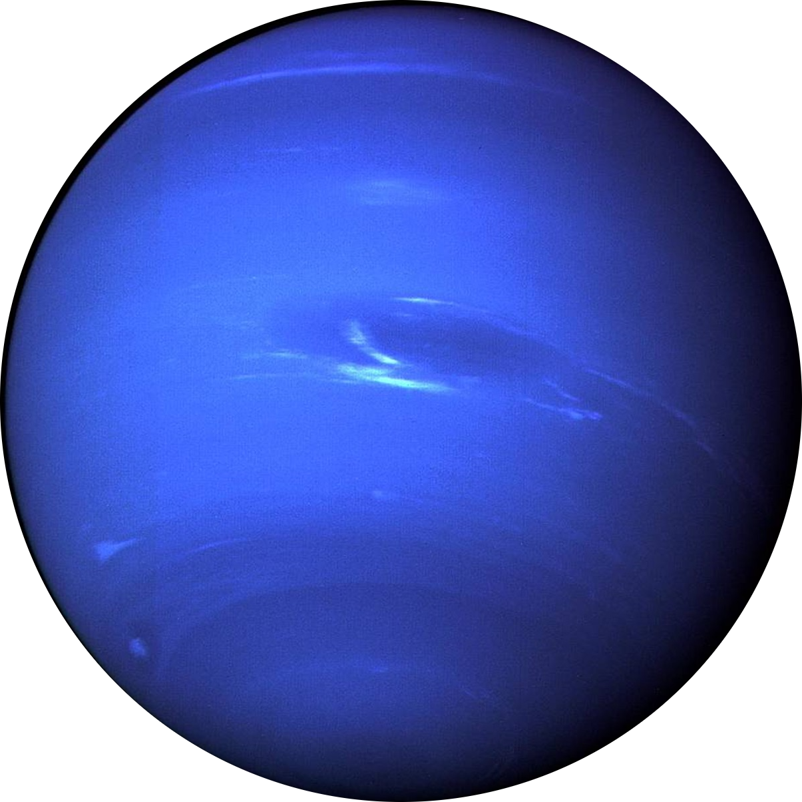

-
Mercury
Mercury
Diameter: 4,879 km • 0.39 AU
Smallest planet • No atmosphere
-
Venus
Venus
Diameter: 12,104 km • 0.72 AU
Hottest planet • Thick CO₂ clouds
-
Earth
Earth
Diameter: 12,742 km • 1 AU
Our home • Only known life
-
Mars
Mars
Diameter: 6,779 km • 1.52 AU
The Red Planet • Possible past water








-
Jupiter
Jupiter
Diameter: 139,820 km • 5.2 AU
Largest planet • Great Red Spot
-
Saturn
Saturn
Diameter: 116,460 km • 9.58 AU
Stunning rings of ice & rock
-
Uranus
Uranus
Diameter: 50,724 km • 19.2 AU
Rotates on its side • Faint rings
-
Neptune
Neptune
Diameter: 49,244 km • 30.05 AU
Fastest winds • Deep blue